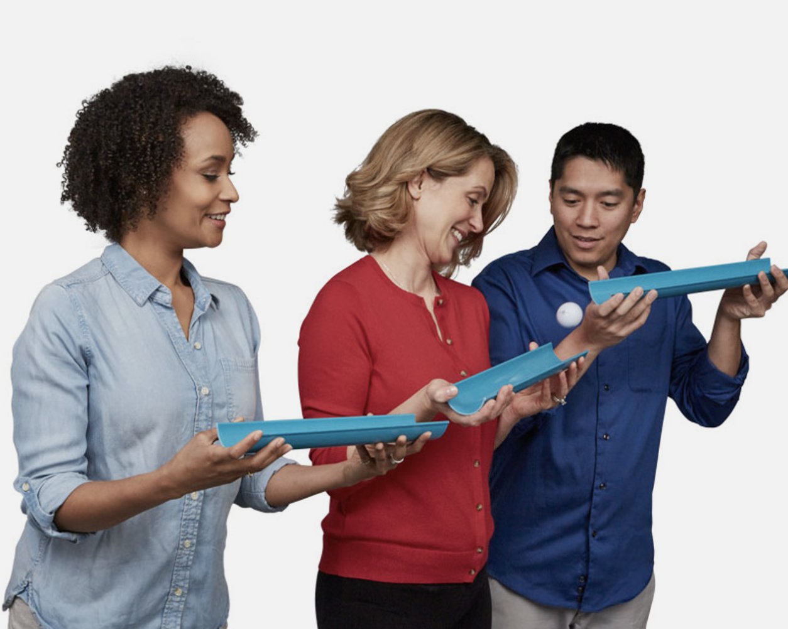
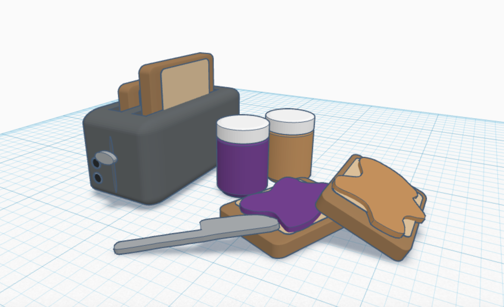
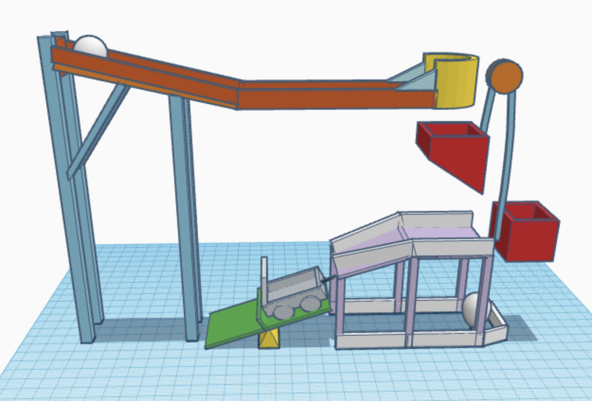
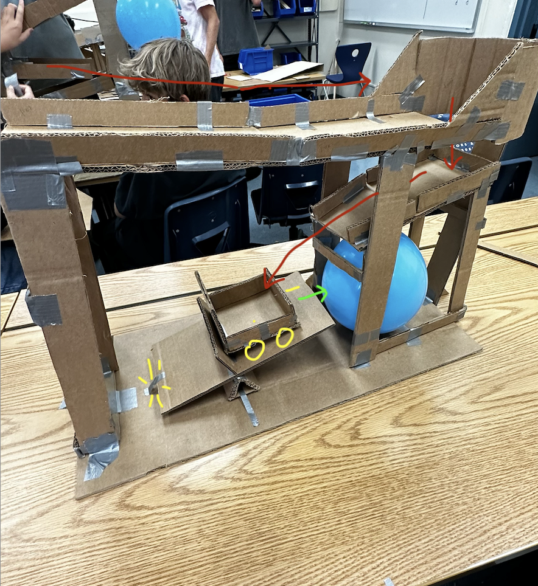

My name is Emma Sadeghi and I'm a junior at Crescenta Valley High School. This is my website for my Intro to Engineering course!
This website will document everyting I learn, build, and experience throughout the year, on a weekly basis! Hope you enjoy! :)
Engineering: Week 1
8/21-8/25:
This was my first week in Intro to Engineering!
During our lectures this week, we learned about the engineering process and saftey and etiquette in the engineering environment.
The engineering process is similar to the scientific process, but much more detailed. The process involves 7 steps which can be
utilized in a feed back loop to design and continually improve projects we do in class. Though larger engineering industries use
this process to find solutions to large scale issues. Our safety and etiquette lecture focused on proper ways to use materials in
the classroom to ensure the safety of yourself and others. It also touched on the safety requirements of large engineering companies,
which are much stricter on safety due to having larger scale projects. To end the week we had our first challenge! The class was split
into two large groups and tasked to roll a marble across the school quad and into a small bucket, using only a few halves of PVC pipes.
We weren't allowed to touch the marble while on the trail, overlap the pipes, or move the ball backwards. Our team immediatley came up
with a plan to line up the pipes and run to the end of the line while the ball rolls. After a few failed trials, and some more
communication among our team, we made it to the bucket!! Well, sort of. We didn't actually get the marble inside the bucket, but at
least we made it to the end. I really enjoyed my first week in this class, and am excited for the rest of the year! :)

(An example of the marble run challenge we did)
Engineering: Week 2
8/28-9/1:
This week and engineering we learned about mechanical engineering and all the different jobs and components that make up the branch.
I learned that mechanical engineering is the most broad of all different engineering branches, making it a convenient field to get
a degree in because of the variety of job opportunies. We also started to deisgn 3D models on Tinkercad, specifically for our
upcoming Rube Goldberg projects. The goal of the project is to get a baseball to pop a balloon after going through multiple simple
machines (such as a pulley, incline, lever, etc.). It has been a bit difficult getting used to the world of Tinkercad, but I am enjoying
the learning curve. Our challenge this week also involved Tinkercad. We were asked to build a realistic home appliance using basic shapes
only, and I picked a toaster with a sandwhich. I think I did pretty good for one of my first builds, but I believe I will be able to
improve its realism the more I familiarize myself with Tinkercad. All in all, it was a good week with new experiences.
Excited to see what next week holds! :)

(The toaster I built buring our Tinkercad challenge.)
Engineering: Week 3
9/4-9/8:
This week was a short but eventful week! We began our week learning more about mechanical enginnering and watched a crash course on the
beginnings of mechanical engineering. The most signifigant thing I learned about was how mechanical engineers were the minds behind many
of the first tools, locomotives, and engines. We then continued to CAD (another thing I learned this week; basically using comupter technology
to create design documentation) our Rube Goldberg designes on Tinkercad. And to end the week we began to physically create our projects based on
CAD. We don't have much to show yet, but we started to cut out our pieces out of cardboard. Our next step would be combining all our pieces
to create the base of the course, before adding the finishing details. Hopefully we will finish our project soon and our tests will be
successful.

(The CAD of our Rube Goldberg project)
Engineering: Week 4
9/11-9/15:
Rube Goldberg Week! We spent all our class time this week working on building, testing, and improving upon our projects. The goal of the project was
to start with a baseball and create a machine which resulted in the popping of a balloon. We had limited supplies, and had to incorporate 3 of the 6
simple machines. My team built an inclined plane, lever, and car out of cardboard as our machines. All 3 machines worked in conjunction to maneuver
the ball through our structure and resulted in the balloon popping. Although we were successful in the end, we did face some issues with our design.
We initially hoped to incorporate a pulley into our project, but could not due to time constrains. Then we faced an issue with the car and needle; the
car would roll into the balloon but didn't pop it. Thus we made some adjustments, and ultimatley popped it! This project was a bit frustrating, but fun
nonetheless!

(Our final project. Red arrows represent the path of the baseball, Green arrow represents
path of the car. Yellow lines show the needle, wheels, and tape that will be released by the
lever.)
Engineering: Week 5
9/18-9/22:
We started our lessons with 2 challenges. For the first one, we were tasked with creating a flotation device that can
hold weight for 5 minutes, using only a singular piece of paper. Though, my device only held 64grams for about 30 seconds.
If given more time, I definitely believe my design could've been better. Our second challenge was to draw a capital letter
"E" with dimensions that somebody else would be responsible for cutting out. This really helped me focus on being clear and
detailed when providing instructions. I think my design was great, and I put a lot of thought into it. Finally, we wrapped
up the week with a lesson on computer engineering, with focuses on computer science and electronic engineering. I enjoyed
this weeks challenges and am excited for more!
Engineering: Week 6
9/25-9/29:
This week we learned about the different parts of a computer and their fuctions within its system. And after learning
about each component, we got to dissect an old pc and physically look at all the pieces. It was actually a bit harder
than I expected. We came across some missing pieces and random wires that confused us when disassembling the computer
but we were able to work around them and successfully disscet the entire computer. Our last task was to put it back
together exactly how it was at the beginning. It was very cool getting to actually see the things we learn about, I
enjoyed this activity alot.
(The before and after of our dissection)